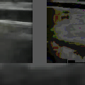
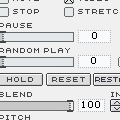

:
videoBat :
:
videoBat :

videoBat . version beta 0.2
|
||||||
Description
VideoBat (yes, like in Batman :)
Supported video format:
Quick Time video (extension: .mov)
Under windows just drop quick time videos on the stage.
Under Macintosh : Click where you want the video to appear and press Control+o
to open the import dialogue (sorry, no drag and drop support on macintosh)
Select - Click and drag on stage or click video
Add to selection - SHIFT + select
Delete - Delete key
Reset video - Q
Move video - Select + arrow keys or just drag
Scratch "kind of" ;) - S + move mouse up and down
Volume - keys 0 to 9
Increase size - "+" key
Decrease size - "-" key
Freeze vertical loc - while dragging the video hold "V"
Freeze horizontal loc - while dragging the video hold "H"
Duplicate video - D + click and drag
Bring to front - U + click
Hide/show selection marquees - M
-------------------------------------------
:: Automation ::
Record movement - R + Drag
Stop movement - Select + T
Rec volumen sequence :
- N to start and stop
- Spacebar (Down -> on, Up -> off)
Rec blink sequence :
- B to start and stop
- Spacebar (Down -> on, Up -> off)
-------------------------------------------
:: Using 2 monitors ::
Customise the size and location of the "stage" by modifiying
the parameters on the "prefs.txt" file inside the "Prefs"
folders.
For example, the following settings:
[1024, 0]
[800, 600]
would set the size of the stage to 800 by 600 pixels and place the top
left of the stage on 1024, 0 coordinates. If you use two monitors or a
projector, in this case, the stage would fill the whole second monitor
area (or the projector), not showing in the second monitor the control
window or the videos you drag from the stage or any open folder.
------------------------------------------
This application has been developed in collaboration with the artist Inazio
Escudero. Ezkerrik asko Inazio.